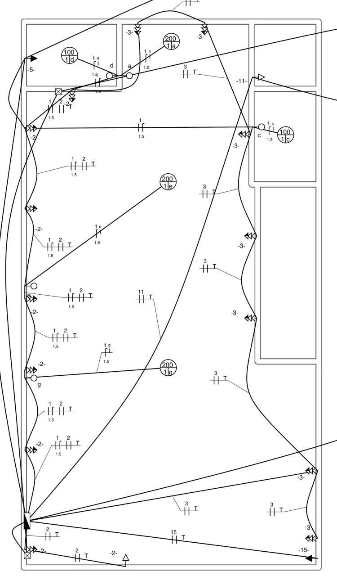
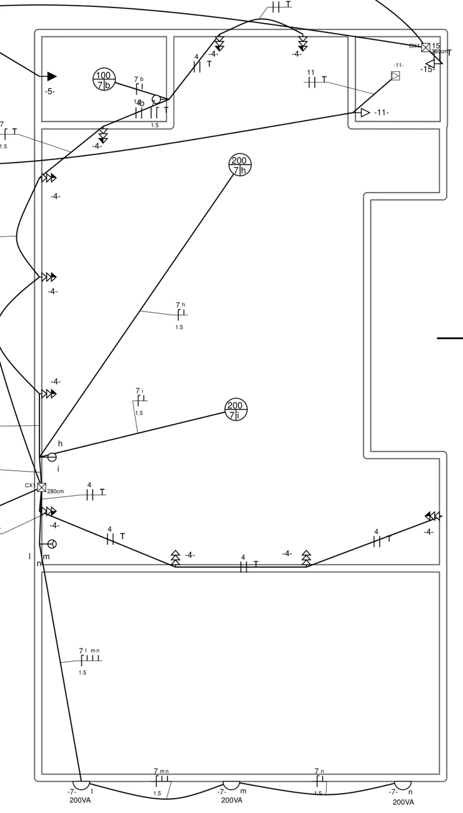

Elevação / parede esquerda
Três aparelhos. Duas cotas de piso.
AC-S1 e AC-S2 no escritório; AC-T1 no térreo. Todos a 2,30 m acima do piso adotado, com circuitos exclusivos 220 V. Os quadros mantêm as posições da R01.
Engenharia / caderno de coordenação
Elétrica, rede e câmeras sobre a estrutura real do projeto. Explore os dois pavimentos, localize cada ponto e acompanhe os percursos até os quadros e o rack.
No celular: um dedo gira, a pinça aproxima e dois dedos deslocam. Toque em uma caixa para consultar a legenda. No computador, use o mouse e a roda.
Os controles mudam apenas a visualização. A geometria e os atributos representam a revisão R02; as posições dos elementos existentes não foram levantadas em campo.
Escolha o pavimento e o sistema. As chamadas ficam fora da planta; selecione um ponto para ler sua descrição e localizar a mesma caixa no 3D.
Coordenadas transpostas da prancha sem cotas de locação e ajustadas às paredes de referência. Curvas em planta são ligações esquemáticas. As alturas e os comprimentos vêm do cadastro e dos eixos 3D.
Dez vistas renderizadas do modelo. Abra uma imagem para ampliar: a descrição e as chamadas permanecem visíveis na lateral.
Climatização à esquerda, geladeiras nos fundos e toda a inteligência concentrada sobre o elevador.
Elevação / parede esquerda
AC-S1 e AC-S2 no escritório; AC-T1 no térreo. Todos a 2,30 m acima do piso adotado, com circuitos exclusivos 220 V. Os quadros mantêm as posições da R01.
Rede / cabeamento estruturado
PP1: 24 enlaces do escritório. PP2: 12 do térreo e 12 portas livres. O NVR conecta-se à rede gerenciada; as câmeras recebem dados e energia pelo switch PoE.
Clique em um circuito para destacá-lo no modelo. Os valores e as premissas são os mesmos do memorial R02.
15 caixas terminais 4x2, 61 caixas terminais 4x4 e 65 caixas de passagem. 2 quadros e 1 rack. Metragem por eixo: 501,31 m.
Cat.6: 769,94 m com folgas / 847 m com margem, equivalente a 3 caixas de 305 m. Patch panels: 2 × 24 portas. Patch cords: 75.
Folgas e margens estão discriminadas no memorial. Quantidades propostas; descontar o material existente após conferência.
Conteúdo das 18 páginas da R02 em texto e tabelas, incluindo as premissas, os cadastros de pontos e o mapa de portas do rack.
8 circuitos da prancha + 3 de ar-condicionado
Todos à esquerda: 1 térreo e 2 escritório
Costas para o banheiro dos fundos à esquerda
24 no escritório e 12 no térreo
Eixos curvos e retos do modelo
Condição de uso. Instalação embutida e passagens nas vigas informadas pelo usuário. As rotas representam a coordenação proposta, sem levantamento do percurso real instalado. Conferir antes de comprar materiais ou intervir.
| Item | Definição da revisão | Como foi tratado |
|---|---|---|
| Base elétrica | Adotada a prancha Projeto elétrico.pdf | Mantidos os circuitos 1, 2, 3, 4, 5, 7, 11 e 15, com seus usos e potências. |
| Ar-condicionado | C06, C08 e C09 acrescentados | 2 x 12.000 BTU/h no escritório e 1 no térreo. Reserva elétrica 1.500 W / FP 0,95 por unidade, a confirmar. |
| Geladeiras | Pontos existentes do PDF identificados para esse uso | Uma por pavimento, nas faces externas dos WCs dos fundos à esquerda. 500 VA por unidade alocados dentro de C02/C04, sem somar novamente à carga da prancha. |
| Quadros | Posições QD-T e QD-S preservadas | C04/C07 foram setorizados no QD-S junto dos novos C06/C08. A prancha reúne os circuitos no QGBT; esta setorização é adaptação explícita da R02. |
| Rack | Mantido sobre a laje do elevador | Patch panels, switch de rede, switch PoE CFTV, NVR e UPS identificados. C15 atende o rack e a tomada auxiliar do térreo. |
| Conduítes | Tomadas / lógica embutidas; luz aparente | Curvas suaves nos planos das paredes e curvas verticais. Caixas acessíveis nas derivações. Ramais finais de iluminação aparentes. |
| Chuveiro | Uma unidade no térreo, 7.300 VA | A prancha também contém símbolo C5 no pavimento superior; foi desconsiderado porque o usuário definiu apenas um chuveiro no térreo. |
| Cabo do chuveiro | 6 mm² no PDF / 10 mm² propostos na R02 | Revisão térmica a 40 °C com proteção bipolar 40 A. Não é afirmação sobre o cabo já instalado. |
Caixas e símbolos: conjuntos de três triângulos foram tratados como uma caixa 4x4 com três módulos de tomada; o PDF não contém legenda de alturas. Foram adotadas alturas de coordenação e registradas no cadastro. A contagem dos módulos é uma interpretação a confirmar, não uma legenda acrescentada ao documento original.


C02: 8 caixas de tomadas no térreo esquerdo/frente. C03: 7 caixas à direita/fundos. C04: 10 caixas no escritório. Iluminação: 5 pontos no térreo e 6 no escritório/fachada, total 11.
A prancha não tem cotas de locação. As posições foram transpostas por referências de perímetro e ajustadas às faces das paredes do DWG. Coordenadas do cadastro são de modelagem; conferir em campo.
As caixas nas costas dos WCs foram aproveitadas. O corpo genérico da geladeira fica voltado para o salão, com a traseira junto à parede do banheiro.
A prancha coloca tomadas junto à lateral da escada e ao fechamento frontal do mezanino. Foram acrescentados fechamentos de alvenaria apenas como referência; material e altura devem ser conferidos.
Curvas grandes na prancha representam ligações esquemáticas. Elas não foram copiadas como tubos atravessando salas ou saindo do prédio. A metragem vem dos eixos do modelo, com curvas incluídas.
| Circ. | Atendimento | Proteção |
|---|---|---|
| C01 | Iluminação térreo | 10 A |
| C02 | Tomadas térreo esquerda + geladeira | 16 A |
| C03 | Tomadas térreo direita / fundos | 10 A |
| C05 | Chuveiro térreo - PDF 7.300 VA | 40 A |
| C11 | Elevador - PDF 1.850 VA | 10 A |
| C15 | Tomada auxiliar térreo + rack | 10 A |
| C09 | AC térreo - 12.000 BTU/h | 16 A |
Tomadas, ar-condicionado, chuveiro, interfaces de energia do elevador e alimentação dos comandos são representados nos planos das paredes.
Trechos finais até as luminárias, em marrom tracejado. Curvas verticais suavizam as mudanças de direção. Interruptores seguem as letras do PDF; retirados os relés de impulso propostos na R01.
Caixas de passagem continuam acessíveis, mesmo embutidas. Não rebocar tampas. Os trajetos não representam um levantamento do que já foi executado.
| Circ. | Atendimento | Proteção |
|---|---|---|
| C04 | Tomadas escritório + geladeira | 16 A |
| C07 | Iluminação escritório / fachada | 10 A |
| C06 | AC escritório 1 - 12.000 BTU/h | 16 A |
| C08 | AC escritório 2 - 12.000 BTU/h | 16 A |
Tomadas, ar-condicionado, chuveiro, interfaces de energia do elevador e alimentação dos comandos são representados nos planos das paredes.
Trechos finais até as luminárias, em marrom tracejado. Curvas verticais suavizam as mudanças de direção. Interruptores seguem as letras do PDF; retirados os relés de impulso propostos na R01.
Caixas de passagem continuam acessíveis, mesmo embutidas. Não rebocar tampas. Os trajetos não representam um levantamento do que já foi executado.
| Ponto | Uso | RJ45 | Enlace |
|---|---|---|---|
| T-D01 | PDV 1 | 2 | 30,2 m |
| T-D02 | PDV 2 | 2 | 32,2 m |
| T-DF | Apoio loja | 2 | 18,9 m |
| T-IP01 | AP T | 1 | 26,7 m |
| T-IP02 | AP T | 1 | 19,7 m |
| T-IP03 | CAMERA T | 1 | 28,7 m |
| T-IP04 | CAMERA T | 1 | 36,1 m |
| T-IP05 | CAMERA T | 1 | 17,2 m |
| T-IP06 | CAMERA T | 1 | 23,4 m |
Enlace contínuo em estrela, sem emendas. APs e câmeras foram colocados em faces de parede, permitindo conduíte embutido até o ponto de conexão.
Ciano: dados / PoE. As duas redes têm cabos dedicados até os respectivos patch panels. Comprimento de enlace inclui 3,00 m no rack e 0,30 m no terminal; patch cords à parte.
| Ponto | Uso | RJ45 | Enlace |
|---|---|---|---|
| S-D01 | Estação 1 | 2 | 21,0 m |
| S-D02 | Estação 2 | 2 | 18,8 m |
| S-D03 | Estação 3 | 2 | 16,6 m |
| S-D04 | Estação 4 | 2 | 14,8 m |
| S-D05 | Estação 5 | 2 | 16,0 m |
| S-D06 | Estação 6 | 2 | 17,5 m |
| S-D07 | Estação 7 | 2 | 28,5 m |
| S-D08 | Estação 8 | 2 | 27,4 m |
| S-IMP-D | Impressora | 2 | 16,3 m |
| S-APO-D | Apoio / copa | 2 | 15,2 m |
| S-IP01 | AP S | 1 | 18,7 m |
| S-IP02 | AP S | 1 | 14,1 m |
| S-IP03 | CAMERA S | 1 | 19,9 m |
| S-IP04 | CAMERA S | 1 | 18,8 m |
Enlace contínuo em estrela, sem emendas. APs e câmeras foram colocados em faces de parede, permitindo conduíte embutido até o ponto de conexão.
Ciano: dados / PoE. As duas redes têm cabos dedicados até os respectivos patch panels. Comprimento de enlace inclui 3,00 m no rack e 0,30 m no terminal; patch cords à parte.
Alturas dos pontos de AC: 2,30 m acima do piso acabado adotado. Dois pontos no escritório em Y = 11,75 e 16,95 m; térreo em Y = 8,10 m. Pontos e tubulação permanecem componentes editáveis.
2 patch panels de 24 portas, switch gerenciável de 48 portas para dados/APs, switch de pelo menos 8 portas PoE para CFTV, NVR para ao menos 8 câmeras IP, roteador/firewall e UPS.
PP1: 24 enlaces do escritório. PP2: 12 do térreo, com 12 portas livres. Das 36 terminações, 6 atendem câmeras e 4 atendem APs. C15 mantém 1.600 VA no conjunto; foram alocados 800 VA ao rack e 800 VA à tomada auxiliar.
Switch CFTV: reserva de orçamento PoE de 120 W. Switch de dados: ao menos 4 portas PoE+, orçamento inicial de 120 W para APs. Conferir potência máxima dos dispositivos. Capacidade de disco e retenção do NVR não foram dimensionadas.
Gabinete indicativo 18U, 600 x 450 x 1.000 mm. Equipamentos são envelopes genéricos; confirmar profundidade, ventilação, abertura da porta e carga admissível da laje.
Percursos: tronco superior pela parede dos fundos em Z = 6,35 m; tronco térreo em 6,55 m antes da descida. Energia do rack em cota distinta. Entradas finais no gabinete são conexões locais. O acesso ao rack continua sujeito à compatibilização.
Operadora / roteador
Switch dados / APs
Switch PoE CFTV
6 câmeras IP
NVR
| ID | Quadro | Uso | VA | V | Fases | mm² | A | Ib A | Iz A | dV total |
|---|---|---|---|---|---|---|---|---|---|---|
| C01 | QD-T | Iluminação térreo | 800 | 127 | BN | 1.5 | 10 | 6,30 | 15,22 | 3,10% |
| C02 | QD-T | Tomadas térreo esquerda + geladeira | 2.700 | 220 | BC | 2.5 | 16 | 12,27 | 20,88 | 2,40% |
| C03 | QD-T | Tomadas térreo direita / fundos | 2.100 | 220 | BC | 2.5 | 10 | 9,55 | 20,88 | 3,02% |
| C04 | QD-S | Tomadas escritório + geladeira | 3.500 | 220 | AB | 2.5 | 16 | 15,91 | 20,88 | 2,89% |
| C05 | QD-T | Chuveiro térreo - PDF 7.300 VA | 7.300 | 220 | AC | 10 | 40 | 33,18 | 49,59 | 2,61% |
| C06 | QD-S | AC escritório 1 - 12.000 BTU/h | 1.579 | 220 | BC | 2.5 | 16 | 7,18 | 20,88 | 2,55% |
| C07 | QD-S | Iluminação escritório / fachada | 1.100 | 127 | CN | 1.5 | 10 | 8,66 | 15,22 | 2,99% |
| C08 | QD-S | AC escritório 2 - 12.000 BTU/h | 1.579 | 220 | BC | 2.5 | 16 | 7,18 | 20,88 | 2,24% |
| C09 | QD-T | AC térreo - 12.000 BTU/h | 1.579 | 220 | AC | 2.5 | 16 | 7,18 | 20,88 | 1,87% |
| C11 | QD-T | Elevador - PDF 1.850 VA | 1.850 | 220 | AB | 2.5 | 10 | 8,41 | 20,88 | 3,44% |
| C15 | QD-T | Tomada auxiliar térreo + rack | 1.600 | 220 | AB | 2.5 | 10 | 7,27 | 20,88 | 2,54% |
QD-T mantém C01/C02/C03/C05/C09/C11/C15 e alimenta QD-S por 3F + N + PE, todos 16 mm². QD-S mantém a posição da R01 e recebe C04/C07/C06/C08. Proteção do alimentador do escritório: 50 A de estudo; seccionamento local e barramentos N/PE separados.
127 V: fase + neutro + PE. 220 V: duas fases + PE. Comando de luz: retornos identificados, conforme letras da prancha. Prever DR 30 mA compatível com o chuveiro e demais aplicações, DPS e capacidade de interrupção a definir pelo estudo de faltas. Não usar terra como neutro.
Fonte versus R02: a seção do C05 foi elevada de 6 para 10 mm² na proposta. As demais seções da prancha foram mantidas. Métodos de instalação, agrupamentos reais e cabos existentes precisam ser conferidos; não se presume que a instalação executada tenha estas características.
| Grandeza | Resultado | Critério |
|---|---|---|
| Carga do PDF | 20,95 kVA | Soma dos oito circuitos; geladeiras alocadas dentro de C02/C04. |
| Complemento AC | 4,74 kVA | Três aparelhos, 1.500 W / FP 0,95 cada. 12.000 BTU/h é capacidade térmica. |
| Soma simultânea | 25,69 kVA | Sem aplicar o fator aproximado de 0,24 que aparece uniformemente no quadro fornecido; critério desse fator não explicado na prancha. |
| Correntes QD-T | 67,79 A / 63,65 A / 67,89 A | Fases do PDF mantidas; fases dos novos circuitos distribuídas pelo cálculo. |
| Correntes QD-S | 15,91 A / 25,56 A / 22,28 A | Alimentador exclusivo de 16 mm², 50 A. |
| Queda dos alimentadores | 1,74% / 0,40% | Entrada / QD-S. Limite conservador 2.rho.L.I/S, referido a 127 V. |
| Maior queda total | 3,44% | Soma dos alimentadores com os trechos do circuito até a carga. Meta de coordenação 4%. |
| Chuveiro C05 | 7.300/220 = 33,18 A | 10 mm², B1, 40 °C: Iz = 57 x 0,87 = 49,59 A; 33,18 <= 40 <= 49,59. |
Cobre/PVC 70 °C e temperatura de referência de 40 °C. Condutos independentes por circuito; sem fator adicional por agrupamento externo. Se houver feixes de tubos, é necessário recalcular. Nos trechos compartilhados dentro do mesmo circuito, a corrente considera a soma das cargas a jusante; rho = 0,0225 ohm.mm²/m.
Três fases de 16 mm² foram informadas; neutro e PE adicionais permanecem a confirmar. A referência CPFL C1 limita demanda a 23 kVA e usa disjuntor 63 A. A soma simultânea desta revisão é superior. A capacidade térmica do cabo depende da isolação e instalação real. A R02 não valida o padrão existente.
Valores de potência dos pontos de tomada foram distribuídos para conservar os totais do PDF. Correntes usam FP 0,95 para luz/AC, 1,00 para chuveiro, 0,85 para elevador e 0,92 para tomadas. Faltas, seletividade, aterramento, harmônicas e cargas térmicas não foram dimensionados.
| Sistema | DN mm | DI mín. mm | Eixo m | Compra +10% m | Ocupação máx. |
|---|---|---|---|---|---|
| Lógica | 25 | 20 | 62,28 | 69 | 19,84% |
| Lógica | 32 | 26 | 20,48 | 24 | 35,23% |
| Lógica | 40 | 34 | 36,84 | 42 | 0,00% |
| Lógica | 50 | 42 | 26,17 | 30 | 33,75% |
| Lógica | 63 | 52 | 7,14 | 9 | 35,23% |
| Elétrica | 25 | 20 | 316,98 | 351 | 12,01% |
| Elétrica | 32 | 26 | 12,83 | 15 | 19,33% |
| Elétrica | 40 | 34 | 18,60 | 21 | 35,03% |
| Item | Quantidade | Observação |
|---|---|---|
| Caixa terminal 4x2 | 15 | Pontos específicos e comandos |
| Caixa terminal 4x4 | 61 | Conjuntos de tomadas, luz e dados |
| Quadros de distribuição | 2 | Posições preservadas |
| Rack | 1 | 18U indicativo |
| Passagem lógica 150x150 | 15 | Embutida, com tampa acessível |
| Passagem lógica 300x300 | 11 | Embutida, com tampa acessível |
| Passagem elétrica 150x150 | 39 | Embutida, com tampa acessível |
Total de conduítes: 501,31 m em 392 componentes, incluindo 203 componentes com eixo curvo. Comprimento calculado pela linha central amostrada. Curvas, bocais, luvas, buchas e suportes devem ser conferidos no sistema comercial; não foram contados como peças de fabricante. DN/DI são requisitos de coordenação.
| Seção | Eixo x condutores m | Compra estimada m | Aplicação |
|---|---|---|---|
| 1,5 mm² | 388,45 | 480 | Cobre / PVC 70 °C; entrada com cobertura adequada 0,6/1 kV |
| 2,5 mm² | 618,10 | 760 | Cobre / PVC 70 °C; entrada com cobertura adequada 0,6/1 kV |
| 10 mm² | 38,49 | 60 | Cobre / PVC 70 °C; entrada com cobertura adequada 0,6/1 kV |
| 16 mm² | 93,01 | 130 | Cobre / PVC 70 °C; entrada com cobertura adequada 0,6/1 kV |
Cabos: soma dos comprimentos físicos por número de condutores, folgas nos pontos e quadros, +10%, arredondada a 10 m. Alimentadores: +2 m por condutor antes da margem. O C05 é proposta em 10 mm²; não substituir a verificação do cabo instalado pela lista.
| Item | Quantidade | Critério |
|---|---|---|
| Cat.6 cobre sólido | 769,94 m com folgas | 847 m com 10%; 3 caixas de 305 m |
| Patch panels | 2 | 24 portas cada; total 48, sendo 36 utilizadas |
| Keystones RJ45 | 36 | 13 caixas de dados + 4 AP + 6 câmeras |
| Patch cords | 75 | 36 rack + 36 terminais + 3 interligações locais |
| Switch de dados | 1 | 48 portas; PoE+ para 4 AP; orçamento inicial 120 W |
| Switch PoE CFTV | 1 | Pelo menos 8 portas; orçamento inicial 120 W |
| NVR | 1 | Pelo menos 8 canais IP; disco e retenção a definir |
| AP / câmeras | 4 / 6 | Modelo, cobertura e campos de visão a definir |
| Rack / UPS | 1 / 1 | 18U / reserva UPS 1.500 VA; validar dimensões e carga |
| Módulos de tomada | 75 | Interpretação dos conjuntos de símbolos do PDF; conferir legenda |
| Interruptores / teclas | 8 / 11 | Comandos diretos conforme letras da prancha |
Tomadas específicas de AC e conexão fixa do chuveiro não entram na contagem de módulos TUG. Interfaces do elevador exigem especificação própria. Não foram dimensionados discos do NVR, sistema de aterramento/SPDA, padrão de medição ou fibra da operadora.
| Ponto | Uso | Patch panel | Cabos | Rota m | Enlace m | Total m |
|---|---|---|---|---|---|---|
| S-D01 | Estação 1 | PP1-01 / PP1-02 | 2 | 17,74 | 21,04 | 42,07 |
| S-D02 | Estação 2 | PP1-03 / PP1-04 | 2 | 15,53 | 18,83 | 37,65 |
| S-D03 | Estação 3 | PP1-05 / PP1-06 | 2 | 13,34 | 16,64 | 33,29 |
| S-D04 | Estação 4 | PP1-07 / PP1-08 | 2 | 11,48 | 14,78 | 29,55 |
| S-D05 | Estação 5 | PP1-09 / PP1-10 | 2 | 12,69 | 15,99 | 31,98 |
| S-D06 | Estação 6 | PP1-11 / PP1-12 | 2 | 14,20 | 17,50 | 35,01 |
| S-D07 | Estação 7 | PP1-13 / PP1-14 | 2 | 25,19 | 28,49 | 56,98 |
| S-D08 | Estação 8 | PP1-15 / PP1-16 | 2 | 24,08 | 27,38 | 54,76 |
| S-IMP-D | Impressora | PP1-17 / PP1-18 | 2 | 13,00 | 16,30 | 32,60 |
| S-APO-D | Apoio / copa | PP1-19 / PP1-20 | 2 | 11,88 | 15,18 | 30,36 |
| S-IP01 | AP S | PP1-21 | 1 | 15,38 | 18,68 | 18,68 |
| S-IP02 | AP S | PP1-22 | 1 | 10,79 | 14,09 | 14,09 |
| S-IP03 | CAMERA S | PP1-23 | 1 | 16,60 | 19,90 | 19,90 |
| S-IP04 | CAMERA S | PP1-24 | 1 | 15,54 | 18,84 | 18,84 |
| T-D01 | PDV 1 | PP2-01 / PP2-02 | 2 | 26,85 | 30,15 | 60,31 |
| T-D02 | PDV 2 | PP2-03 / PP2-04 | 2 | 28,85 | 32,15 | 64,30 |
| T-DF | Apoio loja | PP2-05 / PP2-06 | 2 | 15,63 | 18,93 | 37,87 |
| T-IP01 | AP T | PP2-07 | 1 | 23,41 | 26,71 | 26,71 |
| T-IP02 | AP T | PP2-08 | 1 | 16,40 | 19,70 | 19,70 |
| T-IP03 | CAMERA T | PP2-09 | 1 | 25,35 | 28,65 | 28,65 |
| T-IP04 | CAMERA T | PP2-10 | 1 | 32,76 | 36,06 | 36,06 |
| T-IP05 | CAMERA T | PP2-11 | 1 | 13,87 | 17,17 | 17,17 |
| T-IP06 | CAMERA T | PP2-12 | 1 | 20,11 | 23,41 | 23,41 |
Total Cat.6: 769,94 m com folgas. Maior enlace: 36,06 m. Folgas: 3 m no rack + 0,30 m na saída. Cabo contínuo, sem emendas; certificar 100% dos enlaces. Identificação deve corresponder às duas pontas e à porta do patch panel.
| ID | Uso | Circuito | Tensão / portas | X | Y | Z | H | Caixa |
|---|---|---|---|---|---|---|---|---|
| T-PDF02-01 | Tomadas esquerda | C02 | 220 V | 0,15 | 6,60 | 0,35 | 0,30 | 4x4 |
| T-PDF02-02 | Tomadas esquerda | C02 | 220 V | 0,15 | 9,10 | 0,35 | 0,30 | 4x4 |
| T-PDF02-03 | Tomadas esquerda | C02 | 220 V | 0,15 | 11,11 | 0,35 | 0,30 | 4x4 |
| T-PDF02-04 | Tomadas esquerda | C02 | 220 V | 0,15 | 12,89 | 0,35 | 0,30 | 4x4 |
| T-PDF02-05 | Tomadas esquerda | C02 | 220 V | 0,15 | 15,16 | 0,35 | 0,30 | 4x4 |
| T-PDF02-06 | Tomadas esquerda | C02 | 220 V | 0,15 | 17,17 | 0,35 | 0,30 | 4x4 |
| T-PDF02-07 | Geladeira térreo - costas para WC | C02 | 220 V | 1,33 | 18,18 | 0,35 | 0,30 | 4x4 |
| T-PDF02-08 | Tomada frontal | C02 | 220 V | 2,64 | 6,18 | 1,15 | 1,10 | 4x2 |
| T-PDF03-01 | Tomadas direita / fundos | C03 | 220 V | 7,35 | 6,88 | 0,35 | 0,30 | 4x4 |
| T-PDF03-02 | Tomadas direita / fundos | C03 | 220 V | 7,35 | 8,58 | 0,35 | 0,30 | 4x4 |
| T-PDF03-03 | Tomadas direita / fundos | C03 | 220 V | 5,70 | 12,41 | 0,35 | 0,30 | 4x4 |
| T-PDF03-04 | Tomadas direita / fundos | C03 | 220 V | 5,70 | 14,47 | 0,35 | 0,30 | 4x4 |
| T-PDF03-05 | Tomadas direita / fundos | C03 | 220 V | 5,70 | 17,02 | 0,35 | 0,30 | 4x4 |
| T-PDF03-06 | Tomadas direita / fundos | C03 | 220 V | 4,57 | 19,85 | 0,35 | 0,30 | 4x4 |
| T-PDF03-07 | Tomadas direita / fundos | C03 | 220 V | 2,93 | 19,85 | 0,35 | 0,30 | 4x4 |
| T-LD | Iluminação d | C01 | 127 V | 1,27 | 19,00 | 2,58 | 2,53 | 4x4 |
| T-LC | Iluminação c | C01 | 127 V | 6,54 | 17,01 | 2,58 | 2,53 | 4x4 |
| T-LA | Iluminação a | C01 | 127 V | 3,75 | 19,35 | 2,58 | 2,53 | 4x4 |
| T-LE | Iluminação e | C01 | 127 V | 3,67 | 15,83 | 2,58 | 2,53 | 4x4 |
| T-LG | Iluminação g | C01 | 127 V | 3,68 | 11,16 | 2,58 | 2,53 | 4x4 |
| T-SWD | Comando d | C01 | 127 V | 2,25 | 18,49 | 1,15 | 1,10 | 4x2 |
| T-SWA | Comando a | C01 | 127 V | 2,40 | 18,49 | 1,15 | 1,10 | 4x2 |
| T-SWC | Comando c | C01 | 127 V | 5,88 | 17,21 | 1,15 | 1,10 | 4x2 |
| T-SWE | Comando e | C01 | 127 V | 0,15 | 13,21 | 1,15 | 1,10 | 4x2 |
| T-SWG | Comando g | C01 | 127 V | 0,15 | 10,90 | 1,15 | 1,10 | 4x2 |
| T-CHV | Chuveiro WC térreo | C05 | 220 V | 0,15 | 18,94 | 2,25 | 2,20 | 4x4 |
| ELV-T | Interface elevador - função a confirmar | C11 | 220 V | 5,68 | 18,48 | 1,15 | 1,10 | 4x2 |
| T-AUX | Tomada auxiliar frontal | C15 | 220 V | 7,15 | 6,18 | 1,15 | 1,10 | 4x2 |
| AC-T1 | AC 12.000 BTU/h - parede esquerda | C09 | 220 V | 0,15 | 8,10 | 2,35 | 2,30 | 4x2 |
| QD-T | Quadro geral loja | - | - | 0,30 | 6,85 | 1,55 | 1,50 | QUADRO |
| T-D01 | PDV 1 | - | RJ45 x2 | 1,00 | 6,18 | 1,15 | 1,10 | 4x4 |
| T-D02 | PDV 2 | - | RJ45 x2 | 3,00 | 6,18 | 1,15 | 1,10 | 4x4 |
| T-DF | Apoio loja | - | RJ45 x2 | 3,75 | 19,85 | 1,15 | 1,10 | 4x4 |
| T-IP01 | AP T | - | RJ45 x1 | 0,15 | 8,50 | 2,50 | 2,45 | 4x4 |
| T-IP02 | AP T | - | RJ45 x1 | 0,15 | 15,50 | 2,50 | 2,45 | 4x4 |
| T-IP03 | CAMERA T | - | RJ45 x1 | 0,15 | 6,60 | 2,50 | 2,45 | 4x4 |
| T-IP04 | CAMERA T | - | RJ45 x1 | 7,35 | 6,60 | 2,50 | 2,45 | 4x4 |
| T-IP05 | CAMERA T | - | RJ45 x1 | 0,15 | 18,00 | 2,50 | 2,45 | 4x4 |
| T-IP06 | CAMERA T | - | RJ45 x1 | 6,50 | 18,18 | 2,50 | 2,45 | 4x4 |
Coordenadas transpostas do PDF sem cotas de locação, ajustadas às faces de referência. Não equivalem a levantamento de campo. Nos sanitários, conferir volumes, proteção contra água e posição da hidráulica; nas geladeiras, ventilação e abertura da porta.
| ID | Uso | Circuito | Tensão / portas | X | Y | Z | H | Caixa |
|---|---|---|---|---|---|---|---|---|
| S-PDF04-01 | Tomadas esquerda | C04 | 220 V | 0,15 | 11,05 | 3,83 | 0,60 | 4x4 |
| S-PDF04-02 | Tomadas esquerda | C04 | 220 V | 0,15 | 13,21 | 3,83 | 0,60 | 4x4 |
| S-PDF04-03 | Tomadas esquerda | C04 | 220 V | 0,15 | 15,36 | 3,83 | 0,60 | 4x4 |
| S-PDF04-04 | Tomadas esquerda | C04 | 220 V | 0,15 | 17,19 | 3,83 | 0,60 | 4x4 |
| S-PDF04-05 | Geladeira escritório - costas para WC | C04 | 220 V | 1,30 | 18,18 | 3,58 | 0,35 | 4x4 |
| S-PDF04-06 | Tomadas fundos | C04 | 220 V | 3,37 | 19,85 | 3,83 | 0,60 | 4x4 |
| S-PDF04-07 | Tomadas fundos | C04 | 220 V | 4,86 | 19,85 | 3,83 | 0,60 | 4x4 |
| S-PDF04-08 | Tomadas direita | C04 | 220 V | 7,35 | 10,97 | 3,83 | 0,60 | 4x4 |
| S-PDF04-09 | Tomadas fechamento frontal mezanino | C04 | 220 V | 4,92 | 10,28 | 3,83 | 0,60 | 4x4 |
| S-PDF04-10 | Tomadas fechamento frontal mezanino | C04 | 220 V | 2,59 | 10,28 | 3,83 | 0,60 | 4x4 |
| S-LB | Iluminação b | C07 | 127 V | 1,32 | 19,00 | 5,63 | 2,40 | 4x4 |
| S-LH | Iluminação h | C07 | 127 V | 3,74 | 17,43 | 5,63 | 2,40 | 4x4 |
| S-LI | Iluminação i | C07 | 127 V | 3,67 | 12,93 | 5,63 | 2,40 | 4x4 |
| S-LL | Aplique fachada l | C07 | 127 V | 0,92 | 6,02 | 5,68 | 2,45 | 4x4 |
| S-LM | Aplique fachada m | C07 | 127 V | 3,58 | 6,02 | 5,68 | 2,45 | 4x4 |
| S-LN | Aplique fachada n | C07 | 127 V | 6,63 | 6,02 | 5,68 | 2,45 | 4x4 |
| S-SWB | Comando b | C07 | 127 V | 2,25 | 18,63 | 4,33 | 1,10 | 4x2 |
| S-SWHI | Comando hi | C07 | 127 V | 0,15 | 12,05 | 4,33 | 1,10 | 4x4 |
| S-SWLMN | Comando lmn | C07 | 127 V | 0,15 | 10,45 | 4,33 | 1,10 | 4x4 |
| ELV-S | Interface elevador - função a confirmar | C11 | 220 V | 5,68 | 18,48 | 4,33 | 1,10 | 4x2 |
| ELV-AL | Interface elevador - função a confirmar | C11 | 220 V | 5,68 | 19,48 | 4,73 | 1,50 | 4x2 |
| RK-ENERGIA | Alimentação rack 220 V | C15 | 220 V | 6,85 | 19,35 | 6,20 | 0,42 | 4x2 |
| AC-S1 | AC 12.000 BTU/h - parede esquerda | C06 | 220 V | 0,15 | 16,95 | 5,53 | 2,30 | 4x2 |
| AC-S2 | AC 12.000 BTU/h - parede esquerda | C08 | 220 V | 0,15 | 11,75 | 5,53 | 2,30 | 4x2 |
| QD-S | Quadro escritório | - | - | 0,30 | 10,80 | 4,73 | 1,50 | QUADRO |
| RK-01 | Rack sobre laje L201 | - | - | 6,50 | 19,43 | 6,38 | 0,60 | RACK |
| S-D01 | Estação 1 | - | RJ45 x2 | 0,15 | 11,38 | 3,83 | 0,60 | 4x4 |
| S-D02 | Estação 2 | - | RJ45 x2 | 0,15 | 13,54 | 3,83 | 0,60 | 4x4 |
| S-D03 | Estação 3 | - | RJ45 x2 | 0,15 | 15,68 | 3,83 | 0,60 | 4x4 |
| S-D04 | Estação 4 | - | RJ45 x2 | 0,15 | 17,51 | 3,83 | 0,60 | 4x4 |
| S-D05 | Estação 5 | - | RJ45 x2 | 3,69 | 19,85 | 3,83 | 0,60 | 4x4 |
| S-D06 | Estação 6 | - | RJ45 x2 | 5,18 | 19,85 | 3,83 | 0,60 | 4x4 |
| S-D07 | Estação 7 | - | RJ45 x2 | 7,35 | 11,29 | 3,83 | 0,60 | 4x4 |
| S-D08 | Estação 8 | - | RJ45 x2 | 5,24 | 10,28 | 3,83 | 0,60 | 4x4 |
| S-IMP-D | Impressora | - | RJ45 x2 | 4,00 | 19,85 | 3,83 | 0,60 | 4x4 |
| S-APO-D | Apoio / copa | - | RJ45 x2 | 1,75 | 18,18 | 4,33 | 1,10 | 4x4 |
| S-IP01 | AP S | - | RJ45 x1 | 0,15 | 12,00 | 5,55 | 2,32 | 4x4 |
| S-IP02 | AP S | - | RJ45 x1 | 0,15 | 16,50 | 5,55 | 2,32 | 4x4 |
| S-IP03 | CAMERA S | - | RJ45 x1 | 0,15 | 10,80 | 5,55 | 2,32 | 4x4 |
| S-IP04 | CAMERA S | - | RJ45 x1 | 6,50 | 18,18 | 5,55 | 2,32 | 4x4 |
Coordenadas transpostas do PDF sem cotas de locação, ajustadas às faces de referência. Não equivalem a levantamento de campo. Nos sanitários, conferir volumes, proteção contra água e posição da hidráulica; nas geladeiras, ventilação e abertura da porta.
| Tema | Situação | Critério / pendência |
|---|---|---|
| Rastreabilidade | Prancha elétrica como base | Cargas e números de circuitos preservados, exceto complementos e adaptações explicitados na folha de revisão. |
| Geometria | Paredes / passagens existentes informadas | Não foram criados desvios de vigas. Não se concluiu verificação estrutural das passagens existentes. |
| Rotas embutidas | Representação indicativa | Alturas e curvas não foram medidas em campo. Conferir diâmetros, caixas acessíveis, raios de curvatura e capacidade de puxamento. |
| Fechamentos | Referências a confirmar | Parede lateral da escada e fechamento baixo da borda frontal do mezanino apoiam os pontos do PDF; confirmar se são alvenaria e se admitem as caixas. |
| Energia | Dimensionamento condicionado | Entrada de 16 mm² e fator de demanda da prancha não validados. C05 revisto para 10 mm² no estudo. Confirmar aparelhos, elevador, cabo existente e proteção. |
| Rack | Acesso e equipamento | Confirmar capacidade da laje, acesso seguro, ventilação, profundidade e massa dos equipamentos. |
| Conectividade | 36 enlaces contínuos | Separação de energia/dados, preenchimento dos tubos e patch panels identificados; desempenho de RF/CFTV não simulado. |
Cenas: Coordenação geral, Infraestrutura isolada, plantas de cada pavimento, Rack e elevação das instalações. Tags separam embutidos e iluminação aparente. Componentes têm identificação, seção/circuito, DN, comprimento curvo, ocupação e origem.
Ao editar: os atributos são a fotografia da R02. Mover ou deformar um tubo não recalcula os quantitativos automaticamente. Atualizar o cadastro e a documentação após alterações. Preservados o SKP estrutural, DWG, PDF fornecido e revisões anteriores.
Projeto elétrico.pdf (1 prancha), estrutural 017 em SketchUp e arquitetura DWG. O conteúdo elétrico desta revisão prioriza o PDF e as instruções atuais.
Versão 46.0, 19/03/2026, tabela 1C. Referência do padrão trifásico; demanda e instalação interna precisam de avaliação própria.
https://sites.cpfl.com.br/documentos-tecnicos/GED-13.pdf
Referência pública de métodos de instalação e fatores térmicos. Seções e resultados de coordenação calculados para as hipóteses declaradas.
https://www.electrical-installation.org/enwiki/General_method_for_cable_sizing
Exemplo com consumo nominal de 1.110 W; adotada reserva de 1.500 W por aparelho, sem vincular marca ou modelo.
https://www.lg.com/br/ar-condicionado-residencial/dual-inverter-split/s4-q12ja315/
Consultar ABNT NBR 5410, NBR 14565, NBR 16415, NBR 5419 e NR-10, nas edições e escopos aplicáveis. Esta entrega não é auditoria integral dessas normas.
Arcos em planta são esquemáticos. Tubos 3D têm eixos amostrados e curvas nos planos de instalação; raios comerciais e campo precisam ser compatibilizados.
A R02 substitui a distribuição hipotética da R01 como referência de coordenação. A prancha original permanece preservada; confirmar as adaptações antes de atualizar a instalação executada.